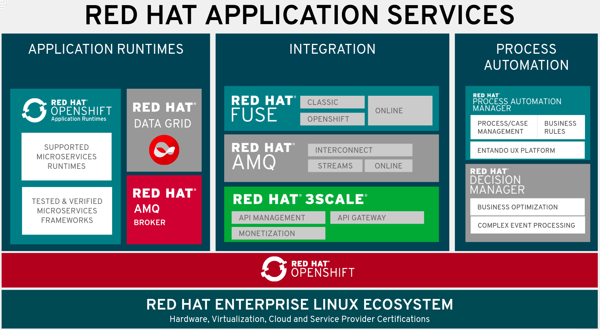
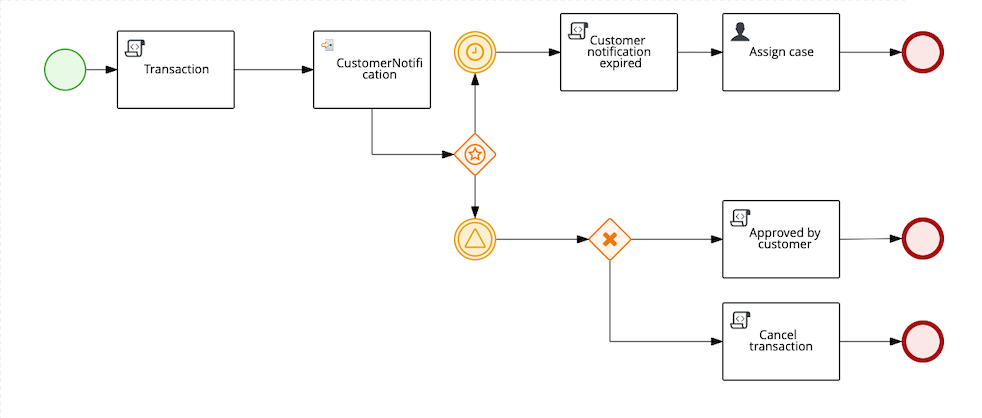

13 Completing the Solution with Red Hat Application Services
Completing the Solution with Red Hat Application Services
As a recap from what we have covered earlier in the workshop, only a small fraction of a real-world ML system is composed of the ML code. The required surrounding elements are vast and complex. In this section, the inclusion of Red Hat’s Application Services offerings will complete the solution.
We have deployed our final model based on XGBoost, but this itself is insufficient in the considerations of a comprehensive AI/ML solution. To complete the picture, we need to consider other critical aspects relevant to any AI/ML application, such as streaming data and a rules engine. In this regard, the introduction of Red Hat Application Services portfolio provides the runtime for running applications to consume incoming data streams, as well as providing integration of different software components alongside streaming to cater to data collection and a rules engine as an integral part of process management.
Red Hat Application Services Portfolio

Red Hat Runtimes
For organizations looking to keep and modernize existing applications, or create net new ones, Red Hat Runtimes provide the integrated and optimized products and components necessary to deliver modern applications. IT teams can containerize applications through adoption of a microservices based architecture, improve data access performance and resilience with in memory data caching models, improve service to service communication with messaging, or adopt cloud native application development using modern development patterns and technologies. For the purposes of this workshop, the runtimes provided will host the consumer application created from SpringBoot.
Red Hat Integration suite
For organizations interested in adopting highly distributed integration deployments, Red Hat Integration provides the products and components necessary to adopt an API first approach. This allows enterprise wide visibility and control of APIs, creation of APIs to allow orchestration of services on newly developed applications or existing ones, and fast and reliable messaging which lets you to build low latency messaging and streaming solutions based on proven messaging patterns. In this workshop, Kafka streams responsible for streaming transaction data are handled by Red Hat AMQ Streams. Additionally, Camel Routing capabilities as an integration piece between different software components will be provided by Red Hat Fuse.
Red Hat Process Automation suite
For organizations looking to improve business agility, operational efficiency, and time to market, Red Hat Process Automation provides the tools and components necessary to deliver applications that automate business processes and decisions to rapidly adapt to a changing environment. Collaboration between IT and business teams enables the capture and enforcement of policies and procedures, automation of business operations, and measure. Decision making is critical in meeting business objectives, and in this workshop Red Hat Decision Manager will take charge of business rules which determine whether a transaction is a fraud or not.
Data Streaming, Integration and Business Rules
Data streaming to ensure the nature of data stays current, integration piecing different software components, business rules to accomplish business objectives, all these are crucial in any enterprise AI/ML setup, and in this section we will be covering how all these fit into the workshop we have been working on till now and how having the right middleware solution is centerpiece to ensuring all these separate components work cohesively.
Middleware Workflow
In this workshop, transactions are kept in a CSV format which is streamed over to Kafka. To determine the authenticity of the conducted transactions. we are interested as to how many of these transactions are fraudulent. Consumer application contains a Camel Router which routes the data as messages around to different components for processing and eventual output.

-
Credit card transactions will be streamed to Kafka
-
The Camel router will consume the transactions from Kafka broker.
-
The first stop the transaction data is routed to is the Python Model, which outputs a probability score as an indication of the transaction being fraudulent or not. The probability score is returned back to the consumer application.
-
Next, the consumer application routes the probability score to Red Hat Decision Manager, based on a threshold which determines whether the transaction is a fraud or not and returns an outcome (Fraud/No Fraud) to the consumer application.
-
The consumer application will route the outcome (Fraud/No Fraud) to a Web application to display the results so that users will be able to view.
Sending Data To Kafka
We will use Jupyter Notebook rh-mlops-workshop/notebooks/4 kafka.ipyb to send transactions to Kafka.
Begin by logging into JupyterHub.
Your user name will be user1 and password is
r3dh4t1!.
After sending the transactions, you can now go to the notification page to see the end results.

Based on the probability score returned from the model, Red Hat Decision Manager is a business rules management system (BRMS) that will decide whether a transaction is a fraud or not.
Red Hat Decision Manager 7 is a powerful, scalable open source business rules management system that includes business resource optimization and complex event processing (CEP) technology. It helps organizations capture business logic and develop applications that automate business decisions.

Future Enhancements
So far what we have seen is how Red Hat AMQ reliably delivers a high-performance streaming of data, whereas Decision Manager configures the business rules to determine whether a transaction is deemed to be fraudulent or not. While this may suffice for certain operations in reality, there is also scope for enhancements to cater to business requirements taking on a more sophisticated nature.
Decision Making
Decision Manager can be used to by introducing individual business processes for handling different kinds of potential fraudulent transactions

Image source: ruivieria-ccfd-demo
Here, a process is instantiated with the transaction’s data and it is consumed by the CustomerNotification node. The CustomerNotification node sends a message to the <CUSTOMER-OUTGOING> Kafka topic with the customer’s id and the transaction’s id. This message is picked by the notification service, which will send an appropriate notification (email, SMS, etc)
In the event where a customer response is not received, there is the potential of a fraudulent transaction, which will be determined after the process of a fraud investigation. In the event where verification is done by the customer, the request is deemed to be non fraudulent, though further customization can be done to investigate any fraud even if the transaction is being approved. The customer’s response determines whether a transaction is fraudulent or not, which means the outcome does not only depend on the output generated from the system, an enhancement from what we have done so far in the workshop.
Feedback loop
The customer’s response can be retained to provide a feedback loop to the training data set to further improve the quality of existing models and address any change in the environment of the data we are collecting from.
Kubernetes-native Java Runtime
Quarkus: Quarkus is a Kubernetes-native Java stack that combines some of the best and most widely-used existing Java libraries with new techniques and technologies that result in Java applications that are extremely small and fast to start. Quarkus-based applications can consume <1/10th the memory and start 300x faster compared with those on traditional Java stacks and can be potentially adopted as part of software setup to significantly bolster its capabilities.
Wrap Up
In this workshop, we have successfully carried out an end to end lifecycle delivery of a fraud detection application. OpenShift provides the enterprise container platform where models are created as images that are immutable, to cater to the reproducibility of results and ensure consistency of the software stack , all these protected with inherent security that comes out of the box from the platform.
Additionally, the NVIDIA GPU Operator is part of the Red Hat Certified Operator Catalog to automate the management of all NVIDIA software components needed to provision the GPU required in the process. To complete the picture, Red Hat AMQ streams enable a high-performance delivery of data streams while Red Hat Decision Manager to handle any associated complex event processing.
We used tools such as
-
JupyterHub from OpenDataHub to provision instances of JupyterNotebooks to create source code and visualize data, as well as building, training and testing models.
-
CodeReady Workspaces to develop the model and deploy code.
-
OpenShift Pipelines to build container images from models which have been developed and trained, and push them to Nexus registry after for eventual deployment.
-
Using Seldon to deploy the model onto OpenShift using GitOps(ArgoCD) methodology
-
For the purposes of monitoring and observability, metric collection is done by Prometheus, which uses Grafana to help users visualize and explore the metrics collected.
Getting all these tools to work cohesively together help to bring about the principles of Continuous Integration (validation of datasets and code base), Continuous Delivery (ensuring that models backed by quality assurance are constantly available in production) and Continuous Testing (retraining and serving models), practices essential to driving MLOps in any environment. With all the appropriate tooling in place, we are offered a view of how the application of DevOps principles in the realm of MLOps helps to increase automation in an environment traditionally fraught with manual processes and difficulty with getting different systems to work cohesively, and subsequently primed to increase the quality of production ML.
While data science models play a critical role in modern businesses, we have seen how it is part of a larger picture consisting of many other important moving parts, and the cohesive integration of all involved components deterministic to the successful delivery of business objectives. With the right infrastructure and practice in place, MLOps empowers Data Science and IT teams to collaborate seamlessly in ways previously thought to be impossible and builds the foundation for agile practices that improve the quality of ML productions while addressing business and regulatory requirements.